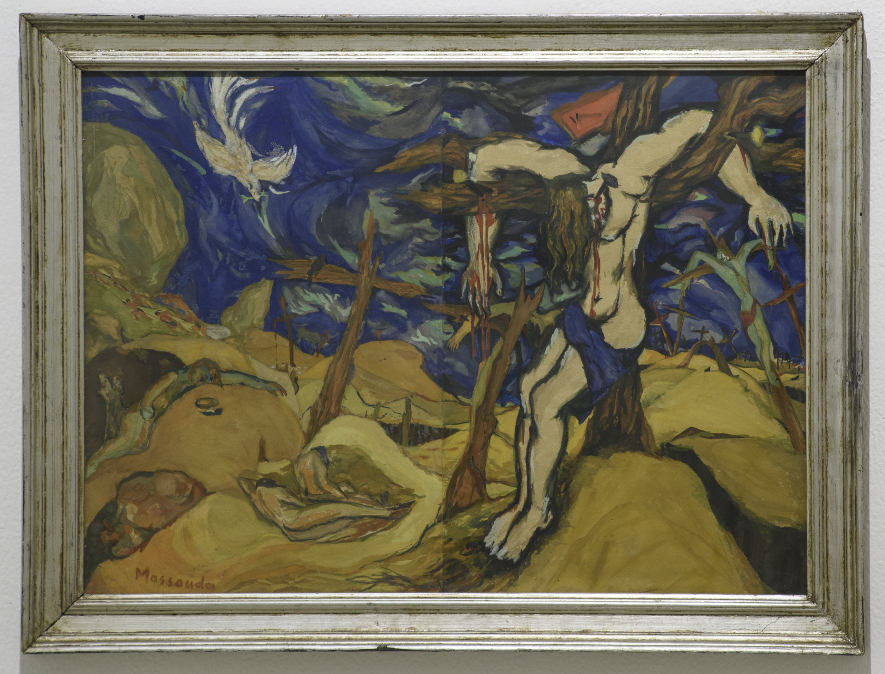
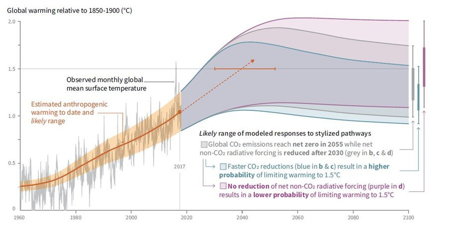
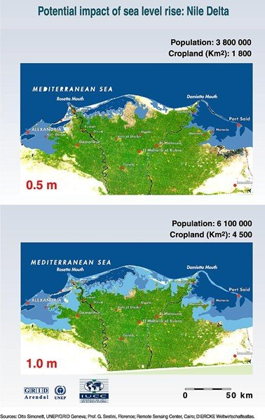
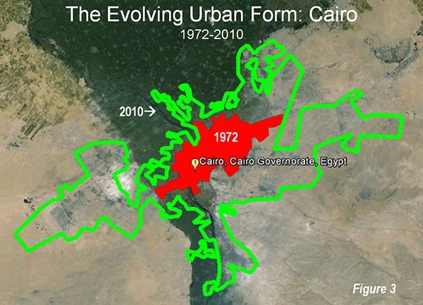
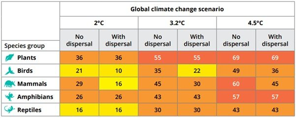

Ibrahim Massouda, The Sacrifice. Gouache on paper, 74 x 55 cm. Courtesy Museum of Modern Egyptian Art in Cairo. Image © S A Foundation.
This text was originally published in Mada Masr on 22 July 2019
By Ismail Fayed
There is something telling in revisiting a polysemic text such as the Quran during times like this. One is immediately hit by the very specific language, metaphor, and literary mode of the text, not to mention its historical context. Often, one does not glean immediate insights as one reads but rather, after one ruminates on all the impressions and ideas that the text reveals — incrementally and very subtly — one starts to create links and associations. This past Ramadan, as I revisited the Quran, I couldn't help but feel a certain synchronicity between the constant call for judgement and the centrality of the apocalypse in the text on one hand, and the ecological, real-world apocalypse taking place as we speak on the other.
According to the UN's Intergovernmental Panel on Climate Change, if current human-made CO2 emissions don't significantly decrease by 2030, an irreversible change to Earth's atmosphere might render the survival of humans and millions of other species suspect. It is starting to happen: Not a day goes by without an image of some starving animal or news of Arctic ice sheets melting at an increasingly fast pace or a terrible heat wave killing and destroying humans, livestock and crops. Yes, by all accounts, an environmental apocalypse appears to be inevitable, and it portends massive loss of life and a fundamental change to the world as we know it.

Graph depicting global warming temperature relative to 1850-1900. - Courtesy: IPCC
Such extraordinary conditions should propel us to question ourselves and the way we deal with the world. Everything from how our economies are run (extractive, exploitative, polluting industries), to how we build (cement is a major pollutant, for example) and move (fossil fuel-based vehicles and modes of transport), to how we plan families (limited resources and ever-increasing populations) and even manufacture our clothes (natural fabrics have a huge carbon footprint and synthetic fabrics cause massive pollution of the oceans from microfibers released through washing) has irreversible consequences.
Here in Egypt, however, anxiety about the environment is completely brushed aside in the frenzied race to simply survive, even though we, too, are experiencing unusual weather patterns (extreme heat waves or freezing temperatures). In a contingent survival mode, it is hard to plan long term. It is challenging to sit and rationally think of how sudden, violent changes to weather patterns could affect our everyday life — how the expected rise in sea levels, for example, could drown Egypt's coasts, the Nile Delta, and with them, hundreds of cities and millions of people. It is almost impossible to find a way to think about this when you cannot afford to buy a small pack of lemons or cooking oil.

Potential impact of rising sea levels on the Delta. Source: United Nations Environment Programme
Egypt and the post-colonial state's moment of reckoning
There seems to be little public debate as to the impending doom here, even though we are starting to see its portents already. And we Egyptians, like many others, are extremely vulnerable facing a change so profound — so all-encompassing, that we are blindsided by its gravity. All the discussions seem to be taking place elsewhere. Politicians seem to be developing policies elsewhere, children seem to be protesting for futures they will never have elsewhere, scientists desperate to find any measures of control seem to be thinking of creative, unusual ways to deal with the crisis elsewhere. We are not really part of that conversation.¹ It shapes very few of our daily concerns, and the 10 percent who are actually aware of the problem and might have the resources to do anything about it are making a run for the desert and its burgeoning fantasy islands of concrete and cement rising in the middle of nowhere — and even those fantasy islands are still unable to fend off basic natural phenomena.

Source: New Geography
Rewind to 2011 and the moment where the system broke down because no future seemed to be possible. It seemed like Mubarak would rule forever. In his 2016 book Left-Wing Melancholia, the Italian historian Enzo Traverso highlights how the failure of the left to bring forth a political utopia resulted in the emergence of the "eternal present." The destruction of the possibility of change, of hope, did away with the future, trapping us in a homogeneous, empty present. This is exactly what happened in Egypt: the post-independence project failed to bring about the brilliant future of the liberated people who will, with their ingenuity and labor, create a great new world. Eventually the moment came and Egypt had to answer for itself, and every other post-independent nation: what has the post-colonial state done? What political realities did it create and what did it sacrifice for its anti-imperialist struggle? And does that narrative still hold or have any meaning at all?
Well, it doesn't. Its political ramifications include mass arrests and detention, repression, pervasive corruption, colossal inequality and, in the case of Syria, genocide and displacement of an entire population. The post-colonial state has become the antithesis of what it promised to be; it is an unfolding apocalypse, in and of itself.
The urgency guiding people's dissent, mobilization and resistance is central to the continued revolutionary waves still taking place all over the Arab world. And it might as well be the same urgency that lies at the heart of the protests demanding climate action that are happening everywhere else right now. How can we continue living liveable lives — free and with dignity, not just for us but for future generations as well — in a world that is uninhabitable? What use is any political program if it hands us a world of dust and ashes?
The failures of the Islamist "project"
The Islamists and the waves of Islamization that took over the region since the 1970s, specifically in the wake of the Iranian Revolution, tried to answer that question. They tried to answer it in the aftermath of the collapse of the Ottoman Empire in 1927, they tried to answer it in the aftermath of the 1952 coup, and they tried to answer it in the aftermath of Nasser's death and the failed dream of post-independence. But the Islamist project continuously failed to give a plausible answer. Its constant referrals to a pre-modern, fictionalized ideal of what a Muslim community should be and one-dimensional view of the Quran as a mere ethical-legal framework understood solely through a ritualistic lens was and remains inherently lacking, politically speaking.² It lacks an immediate political sensibility pivoting on notions of justice, and any actual awareness of the future of Egypt and the world that Egypt and Egyptians are part of.
The apocalypse is indeed a central theme in the Quran, like the rest of the Abrahamic faiths, but the Quran comes with a specific notion of time. Time is not cyclical, nor primordial nor infinite; it is bound by a certain divine providence, moving towards a very specific purpose: revelation through judgement and accounting for one's actions. In fact, the Quran talks very little about rituals per se (cleansing rituals for example are mentioned maybe four or five times in the entire 6,236 verses) and the apocalypse is mentioned more than 150 times in different terms ("hour of judgment," "day of judgment," "day of reckoning," etc.). It is almost as if the text prepares its readers for it. Yet, again, the Islamist project constructs an elaborate interpretation of the ideal way to prepare for the apocalypse: specific moral injunctions, reenacted again and again in formalistic, almost ceremonial fashion. No mention of the horrors of exploitation, no mention of the terrible effects of an extractive economy, no mention of the speculative and invisible nature of capital. No mention of the mass extinction event waiting to happen. None of that. The urgency is centered only on this very specific way of performing a set of rituals again and again until the world ends.
The ecological awareness of the Quran
Yet along with the apocalypse as a central, framing motif of the text, there is an abundance of ecological musings: a quasi-sensitization to the world and the universe we live in. There are plenty of mountains, rivers, trees, birds, and cattle; there is plenty of rain, wind, seas, and rivers — the text is replete with natural phenomena. In fact, the moral trusteeship of man over the earth — that trusteeship that enables him to assume responsibility for himself and for the world, acting as the sole moral agent worthy of God's grace — is offered to all of God's creation, which they all refuse and only man accepts, in his ignorance and unfairness to himself and others. Man's moral guardianship over God's creation is embedded in this very specific awareness of this creation, and the significance of maintaining it, respecting it and practicing compassion towards it. In exercising the virtues of mercy, justice and equity over all God's creation, man becomes God-like, and thus becomes apt to assume this formidable task.
It is now more than ever that this deeply ecological awareness should be the guiding moral and ethical frame through which we look at the text and make it speak to our reality. The idea of addressing the environmental apocalypse about to happen is not to stop the symbolic apocalypse as outlined by the text, or even to undo what God has already set forth to happen (the notion of mortality, that all that lives must die — the world was created for a purpose and will eventually cease to exist), but it is to assume responsibility for one's actions; to develop a moral sense rooted in one's relationship to the world and everything in it.

Table showing impact of climate change on the Mediterranean region. - Courtesy: World Wide Fund for Nature
The environmental apocalypse taking place right now, in our cities, villages, and on our coasts, forces us to question ourselves as a species. And that very brief moment of reckoning in 2011 which opened a number of questions regarding how we imagine the community we want to live in seems to overlap in many ways with the current cataclysm. There can be no doubt that such a moment calls for a different sensibility, not just politically but morally and ethically. If the January 25 revolution interrogated the moral and political foundations of the post-independence and Islamist projects — prompting questions about religion, political imagination and our relationship to the world — then the apocalypse pushes us back to the same position eight years later.
The world cannot go on the way it has (at least for the last two hundred years), and what we know and understand at this moment is unlike anything we have known or understood as humans before. Politics, religion and ethics acquire very different meanings and significance today, and we know that any answer that culminates in "politics as usual" won't work. What the apocalypse and the uprisings that took and are taking over the Arab world teach us, is that we are not alone. Our struggle for justice, freedom and livable lives unites us more than it divides us. It thrusts us back into the real world, forcing us to see a global picture of our destiny. Our survival becomes contingent on understanding how our actions affect the world around us. And how we choose to address the consequences of those actions, together, as a collectivity, is probably our only way out of a world where our survival is a mere possibility.
—
¹ The current Egyptian minister of the environment has just participated in the R20 Austrian World Summit, but the Egyptian government is yet to release a plan outlining any kind of comprehensive policy concerning rising sea levels, degradation of the environment or extreme weather phenomena. Recently, several members of Parliament submitted a request for inquiry regarding the impact of current weather changes on crops, but that remains to be addressed by the cabinet. The Ministry of Environment's website contains policies and reports addressing climate change, and there is a designated Climate Change Department, but most of the reports and policy documents date back to 2010/2011, and when the department was contacted to inquire about a more recent policy it did not reply.
² The more "political" aspect of the Islamist project — re-purposing jihad as modus operandi of a Muslim community (that the community is in a constant state of jihad against everything and everyone) — is another version of Foucault's "politics is war by other means." It is rooted in the modernist notion of the state as a monopolizer of power and the violence embedded in it. The only difference is that the Islamists' modes of power or violence claim premodern "ancestry," but the truth is theirs remains a strictly modern conception of power.